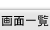

RSSリーダー情報を一覧表示する画面です。
機能説明
管理者設定ボタン管理者設定メニュー画面へ遷移します。 |
個人設定ボタン個人設定メニュー画面へ遷移します。 |
|---|---|
ランキングボタンRSSリーダー登録ランキング画面へ遷移します。 |
新規購読ボタンフィードURL入力画面へ遷移します。 |
RSS名称別ウィンドウで該当ページが表示されます。 |
編集ボタンRSS編集画面へ遷移します。 |
RSS内容別ウィンドウで該当ページが表示されます。 |
ウェブ検索フィードのタイトルを検索キーワードにウェブ検索を行います。 |
購読ボタンフィード登録確認画面へ遷移します。フィードを登録します。 |
購読ボタンフィード登録確認画面へ遷移します。フィードを登録します。 |
RSS名称（新着RSS）別ウィンドウで該当ページが表示されます。 |
購読ボタンフィード登録確認画面へ遷移します。フィードを登録します。 |